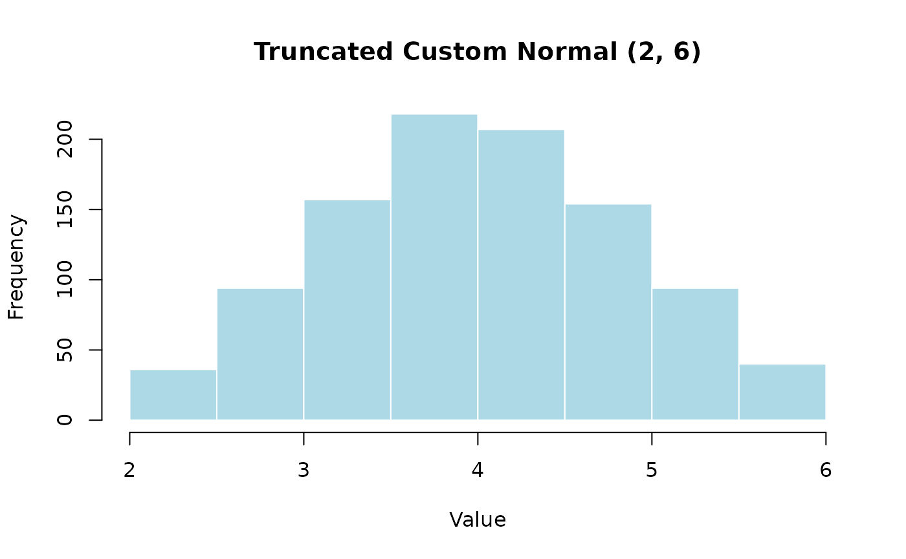
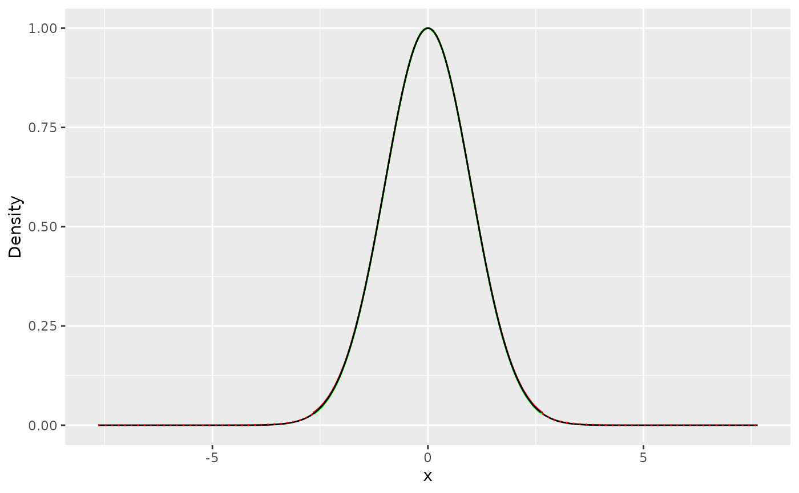
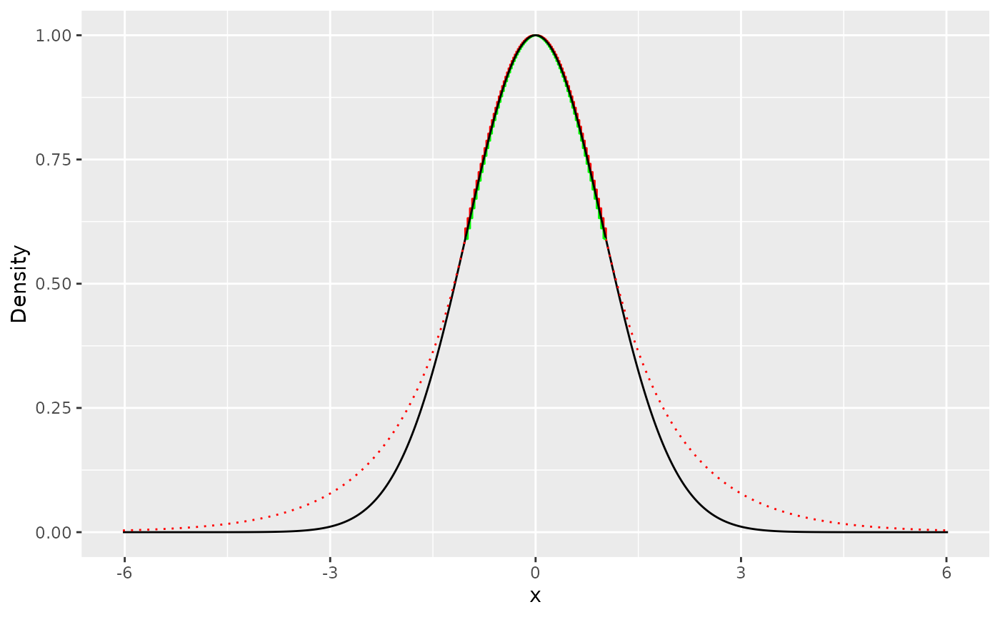
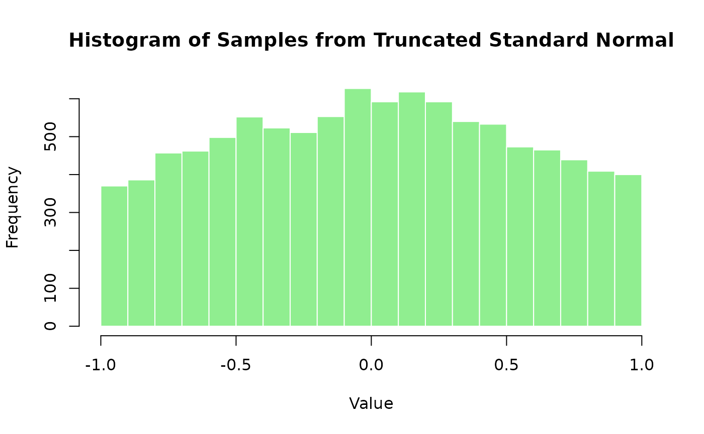
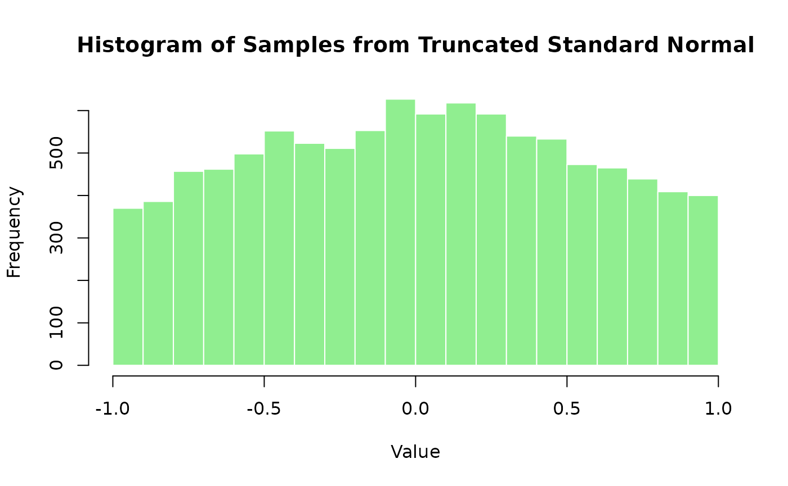

Sampling from Built-in Distributions using stors
Sampling_Built_in_distributions.RmdIntroduction
The stors package provides efficient sampling from uni-
and multimodal distributions using Rejection Sampling techniques. For
built-in distributions, STORS offers optimized sampling functions that
leverage pre-constructed proposals to maximize sampling speed.
In this vignette, we focus on how to use the stors
package to sample from built-in distributions, demonstrating the
simplicity and efficiency of the package’s built-in functions.
To sample from any built-in distribution, a proposal for each distribution is pre-optimized using 4091 steps when the package is loaded for the first time. This optimization process constructs the proposal and stores it in the internal R data directory. The proposal is then cached in memory for efficient sampling whenever needed.
You can also visualize the proposal data using the function to better understand its structure.
Here’s an example of optimizing a proposal for the Normal distribution (note: this process is performed automatically when the package is installed and loaded for the first time):
library(stors)
# Optimize a proposal for the Normal distribution with 4091 steps
proposal <- srnorm_optimize(steps = 4091)
# Visualize the optimized proposal
plot(proposal)With the optimized proposal ready, sampling from a Normal distribution with specific and is straightforward using the function.
# Generating 10 samples from the standard Normal distribution
standard_normal_samples <- srnorm(10, mean = 2, sd = 1)
print(standard_normal_samples)
#> [1] 0.5969126 2.9729916 2.2556419 0.9922990 -0.4526005 1.9155297
#> [7] 1.9944033 1.4451368 2.6224192 2.7482640On the other hand, users can optimize a proposal for a specific Normal distribution by calling and passing the desired and arguments. In this case, a unique proposal will be optimized and cached in memory. To sample from this custom proposal, the user can use the function by simply specifying the sample size.
# Optimize a custom proposal for N(3, 2)
proposal <- srnorm_optimize(mean = 3, sd = 2, steps = 2000)
# Generate a sample of size 10^3 from N(3, 2)
sample <- srnorm_custom(10^3)
# Visualize the generated sample
hist(sample, main = "Histogram of Samples from N(3, 2)", xlab = "Value", col = "skyblue", border = "white")To sample from a truncated Normal distribution, users need to optimize either the scalable proposal or a custom proposal and specify the truncation bounds using the (lower bound) and (upper bound) arguments.
# Define the truncation bounds
lower_bound <- -1
upper_bound <- 1
# Optimize the scalable proposal with truncation bounds
proposal <- srnorm_optimize(xl = lower_bound, xr = upper_bound, steps = 4091)
# Generate samples from the truncated standard Normal distribution
sample <- srnorm(10^3)
hist(sample, main = "Truncated Standard Normal (-1, 1)", xlab = "Value", col = "lightblue", border = "white")
# Generate samples from the truncated Normal distribution N(2, 1)
sample <- srnorm(10^3, mean = 2)
hist(sample, main = "Truncated Normal N(2, 1) (-1, 1)", xlab = "Value", col = "lightgreen", border = "white")The same process can be applied to a custom proposal. A custom proposal can be truncated and used for sampling by following this example:
# Define the truncation bounds
lower_bound <- 2
upper_bound <- 6
# Optimize a custom proposal with truncation bounds and mean = 4
proposal <- srnorm_optimize(mean = 4, xl = lower_bound, xr = upper_bound, steps = 4091)
# Generate samples from the truncated Normal distribution
sample <- srnorm_custom(10^3)
hist(sample, main = "Truncated Custom Normal (2, 6)", xlab = "Value", col = "lightblue", border = "white")
The functions not only optimize the proposal but also return a detailed list describing the properties of the optimized proposal. This list provides insights into the proposal’s structure and characteristics. You can use the base function to view these details or the function to visualize the proposal.
# Optimize a proposal for the Laplace distribution
proposal <- srlaplace_optimize(steps = 4091)
# View the details of the optimized proposal
print(proposal)
#>
#> ── Proposal Summary ────────────────────────────────────────────────────────────
#> • Total steps: 4,091
#> • Steps range: [-6.611093, 6.335299]
#> • Sampling efficiency: 99.84%
# Visualize the proposal
plot(proposal)In cases where the proposal is dense and difficult to visualize in its entirety, you can focus on a specific region by using the function with the and parameters. These parameters allow you to set limits on the x-axis, making it easier to zoom in on areas of interest within the proposal.
# Optimize a proposal for the Normal distribution
proposal <- srlaplace_optimize(steps = 1020)
# Visualize the entire proposal
plot(proposal, main = "Full Grid Visualization")
# Focus on a specific region of the proposal (e.g., x-axis range -2 to 2)
plot(proposal, x_min = -1, x_max = 1, main = "Zoomed-In Grid (-1, 1)")These functionalists of the proposal_optimizers and the subsequent visualization tools provide users with in-depth insights into the characteristics of the generated proposal, enabling them to understand and fine-tune the sampling process.
If the user is not satisfied with the automatically optimized
proposal, the proposal_optimizers functions offers several arguments for
customization. One such argument is target_sample_size,
which defaults to 1000. If the user wishes to optimize the proposal for
significantly larger or smaller sample sizes, this argument can be
altered.
Another important argument is the pre-acceptance threshold
theta, which essentially is the ratio between the lower and
upper linear bounds for each step. This is typically set to a very small
number close to zero. The reason is that the cost of rejecting samples,
even in heavy-tailed distributions, is usually less than the cost of
using alternative exact sampling methods (like Inverse Transform) for
dense proposals, as the probability of hitting these inefficient steps
is low. However, for very large sample sizes (e.g., 10^9), these
inefficient steps might be hit more frequently, leading to an increase
in sampling time due to lower efficiency. In such cases, the user can
set a higher pre-acceptance threshold using the theta
parameter.
For users who are less familiar with the target distribution, or want
to focus on a specific range of the distribution, the
proposal_range argument can be used. This parameter limits
the step construction to a specified range on the x-axis, offering more
control over the proposal structure.
# Customizing the proposal for a specific sample size
custom_proposal <- srnorm_optimize(target_sample_size = 10000)
print(custom_proposal)
#>
#> ── Proposal Summary ────────────────────────────────────────────────────────────
#> • Total steps: 132
#> • Steps range: [-2.735325, 2.735325]
#> • Sampling efficiency: 97.42%
plot(custom_proposal)
# Customizing the proposal with a specific pre-acceptance threshold
custom_proposal_high_theta <- srnorm_optimize(theta = 0.9)
print(custom_proposal_high_theta)
#>
#> ── Proposal Summary ────────────────────────────────────────────────────────────
#> • Total steps: 4,294
#> • Steps range: [-2.892355, 2.892355]
#> • Sampling efficiency: 99.87%
plot(custom_proposal_high_theta)
# Customizing the proposal within a specific range
custom_proposal_range <- srnorm_optimize(proposal_range = c(-1, 1))
print(custom_proposal_range)
#>
#> ── Proposal Summary ────────────────────────────────────────────────────────────
#> • Total steps: 82
#> • Steps range: [-1.026970, 1.026970]
#> • Sampling efficiency: 86.32%
plot(custom_proposal_range)
In addition to the target_sample_size,
theta, and proposal_range parameters, users
have the flexibility to directly control the number of steps in the
proposal. This can be particularly useful when users have specific
requirements or preferences for the granularity of the proposal. To
specify the number of steps, the steps argument can be
passed to the proposal_optimizer function.
By setting the steps parameter, users can determine the
resolution of the proposal, which can impact the balance between
computational efficiency and the granularity of the sampling. A higher
number of steps typically provides a more detailed proposal, potentially
leading to more precise sampling, but at the cost of increased memory
usage and possibly longer computation times.
# Customizing the proposal with a specific number of steps
custom_proposal_steps <- srnorm_optimize(steps = 50)
plot(custom_proposal_steps)
custom_proposal_steps <- srnorm_optimize(steps = 500)
plot(custom_proposal_steps)
The user can also create a symmetric proposal for built-in distributions by setting the argument to the value around which the target density is symmetric.
Example: Creating a Symmetric Proposal for the Standard Normal Distribution
In this example, we create a symmetric proposal for the standard Normal distribution. Before doing so, we first delete all previously constructed non-symmetric proposals (both scaled and custom) using the function.
#> ✔ Proposal number 1 deleted
#> ✔ Proposal number 2 deleted
#> `geom_line()`: Each group consists of only one observation.
#> ℹ Do you need to adjust the group aesthetic?
Sampling from Truncated Distributions One of the standout features of STORS is its ability to sample efficiently from truncated distributions. To sample from a truncated distribution, the user simply needs to specify the upper and lower truncation bounds using the (lower bound) and (upper bound) arguments in the function.
Example: Sampling from a Truncated Standard Normal Distribution In this example, we demonstrate how to sample from a truncated standard Normal distribution with truncation bounds at and .
#> ✔ Proposal number 1 deleted
#> `geom_line()`: Each group consists of only one observation.
#> ℹ Do you need to adjust the group aesthetic?
#> `geom_line()`: Each group consists of only one observation.
#> ℹ Do you need to adjust the group aesthetic? 

There are many built-in functions in stors, the list below shows all available functions that can be used directly by the user after optimizing the proposals:
#> • `srnorm_custom()`
#> • `srlaplace_custom()`
#> • `srexp_custom()`
#> • `srchisq_custom()`
#> • `srgamma_custom()`
#> • `srbeta_custom()`
#> • `srpareto_custom()`For each built-in distribution, there is a corresponding proposal distribution optimizer that can be invoked using the format . This function optimizes the proposal for the specified distribution, enabling efficient sampling.